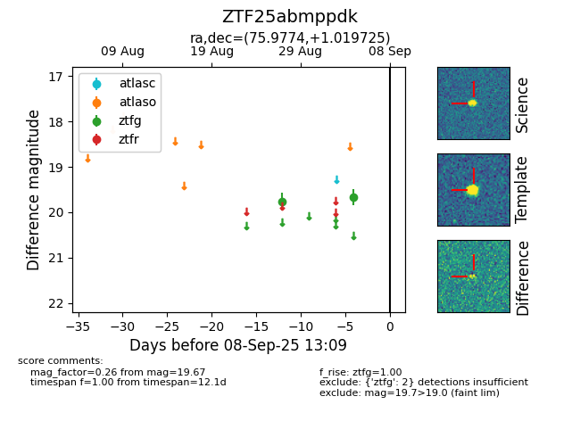

FINK: ZTF25abmppdk
Lasair: ZTF25abmppdk
ALeRCE: ZTF25abmppdk
ZTF25abmppdk (ztf,fink)
equatorial (ra, dec) = (75.9774,+1.01973)
galactic (l, b) = (198.9542,-23.21823)

last ztfg=19.67
2 ztfg detections